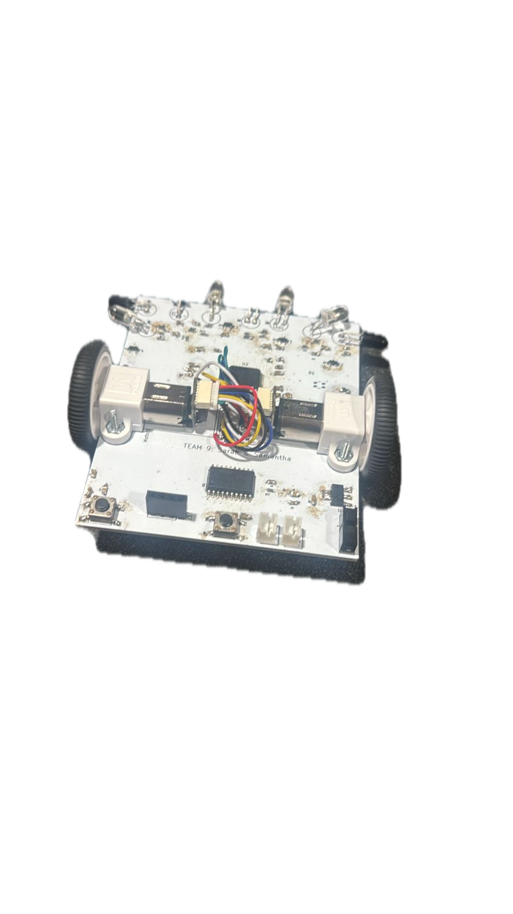
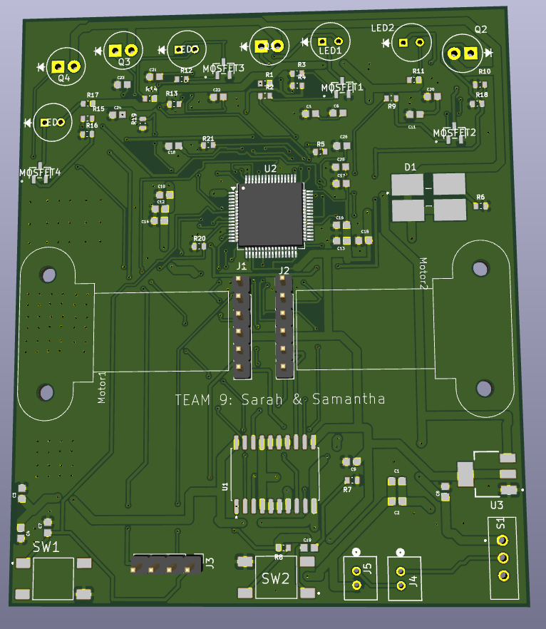

A PCB-based maze-solving robot, built for IEEE UCLA's Micromouse competition.


I designed and built a maze-solving micromouse robot for the all american micromouse competition hosted by IEEE UCLA. It was the first PCB i ever made and I laid out and soldered the PCB myself, then my teammate wrote and tuned the embedded control running on an STM32. The board handles motor drive, sensor input, and power regulation in a small enough footprint to actually fit and move through the maze.
Beyond the hardware, most of the real work was in the navigation algorithms — getting the robot to explore an unknown maze, build a map as it goes, and then optimize its path once it's found the center. I did not know about chamfering back then lol.